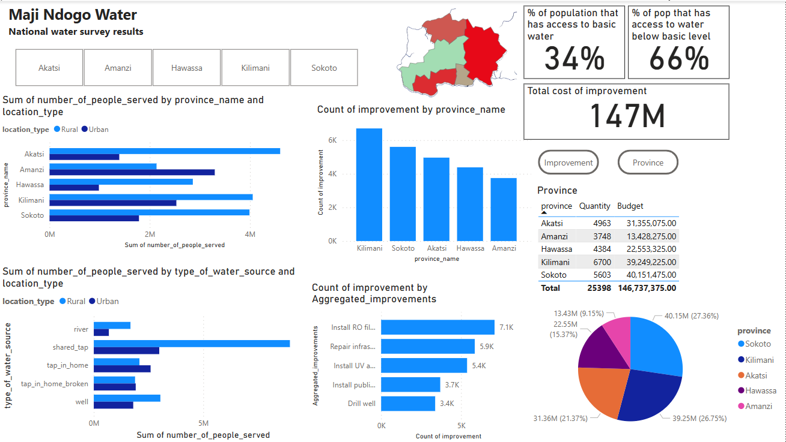
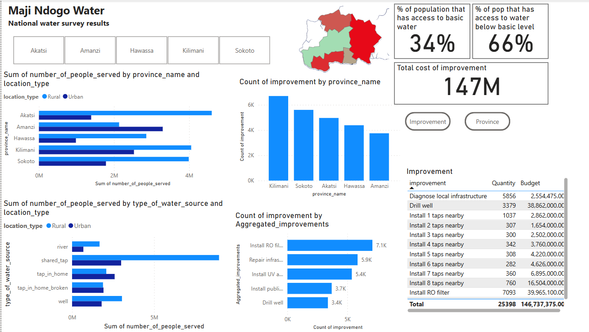
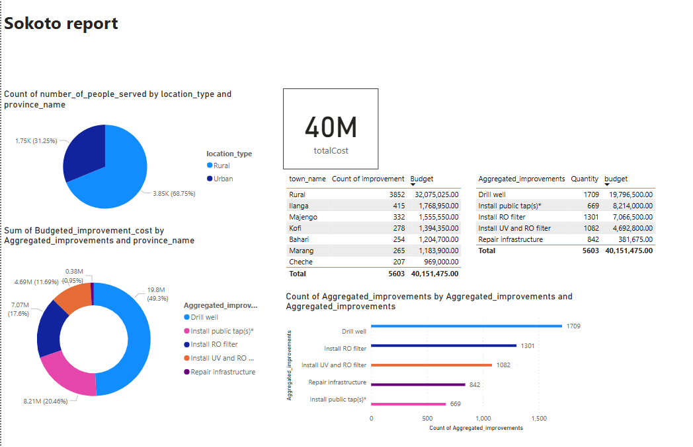

.png)
.png)
.png)
.png)
.png)
.png)



Data-Driven Insights, Visualizations, and Analytical Solutions
The Access Drinking Water project used Google Spreadsheets to familiarize with various functions and
tools for data analysis. The project focused on exploring inequalities in water accessibility between different countries
and regions. Using spreadsheets, various functions like sorting, filtering, and performing basic calculations were applied
to the dataset to analyze the types of water sources, service levels, and geographical disparities in access to safe
drinking water.
Although no complex tools or databases were used, this approach helped to understand the structure of the data and gain
insights into the accessibility challenges across regions. The project provided an opportunity to practice using basic
data manipulation functions and set the foundation for more advanced data analysis tools in future projects.
Google Spreadsheets, Basic Data Functions (Sorting, Filtering, Calculations).
In the Maji Ndogo Project, the SQL part is focused on analyzing data related to water accessibility for the population, including the type of water source and its quality. The database is structured to store information about different water sources, such as wells, rivers, shared taps, or in-home taps, and whether they are clean or contaminated. SQL queries are used to categorize the water sources based on their cleanliness and accessibility to various populations. This includes organizing data on the geographical distribution of water sources, the number of people relying on each source, and whether the water meets health standards. The SQL part also involves running analysis to identify regions with limited access to clean water, ensuring the data supports efforts to improve water quality and accessibility. By using joins and aggregate functions, the project allows for meaningful insights to inform decision-making and intervention strategies to improve water accessibility and quality.
SQL, MySQL.
In the Maji Ndogo project, I utilized Power BI to create dynamic and interactive dashboards that provided a clear visualization of the water accessibility data. Using Power BI's powerful data transformation and visualization tools, I was able to clean, model, and analyze data related to water sources, their accessibility, and quality. The visualizations included charts, graphs, and maps that illustrated key trends, such as the distribution of shared taps, in-home taps, and the cleanliness of water sources across different regions. This data was crucial in determining the areas most in need of infrastructure improvements. The visualizations helped stakeholders make data-driven decisions to prioritize provinces requiring immediate attention. Additionally, the dashboards were used to calculate the budget needed for repairs and to allocate funds to each province based on the severity of the water accessibility issues. Beyond infrastructure concerns, the analysis also highlighted the social risks associated with water collection. Data on crimes related to fetching water, particularly in regions where residents—often women and children—must travel long distances through unsafe areas to reach water sources, was also visualized. By incorporating these insights, the project aimed to inform policies that not only improve water infrastructure but also enhance safety in vulnerable areas.
Power BI.